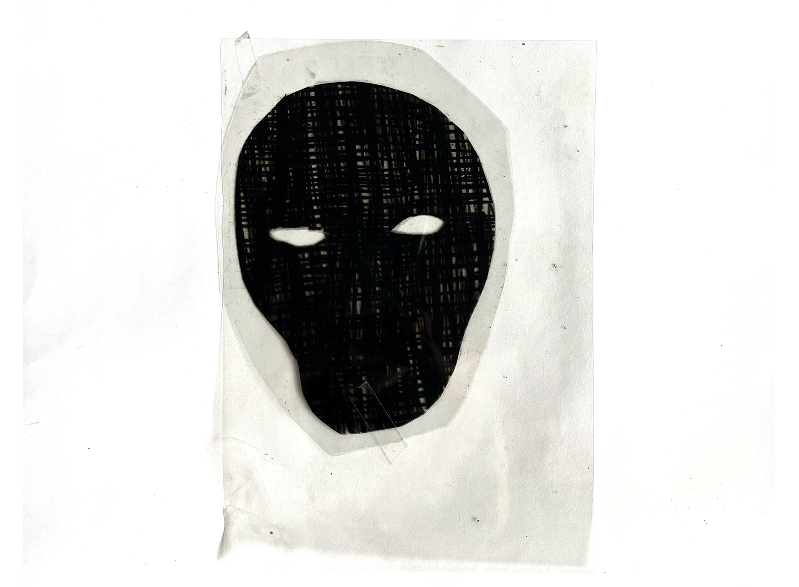
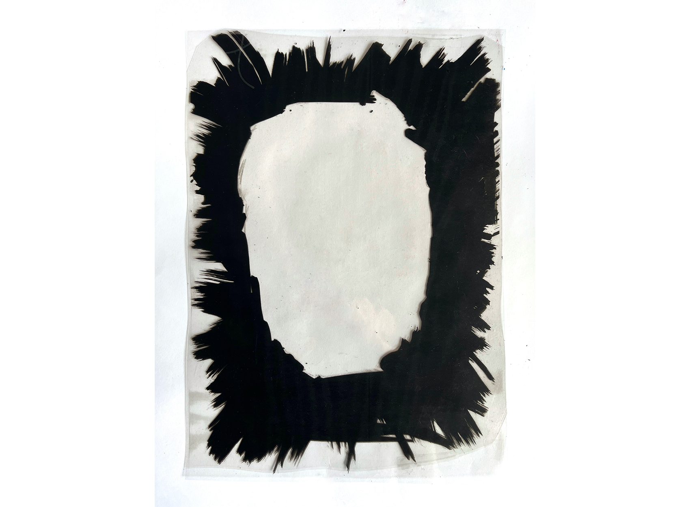
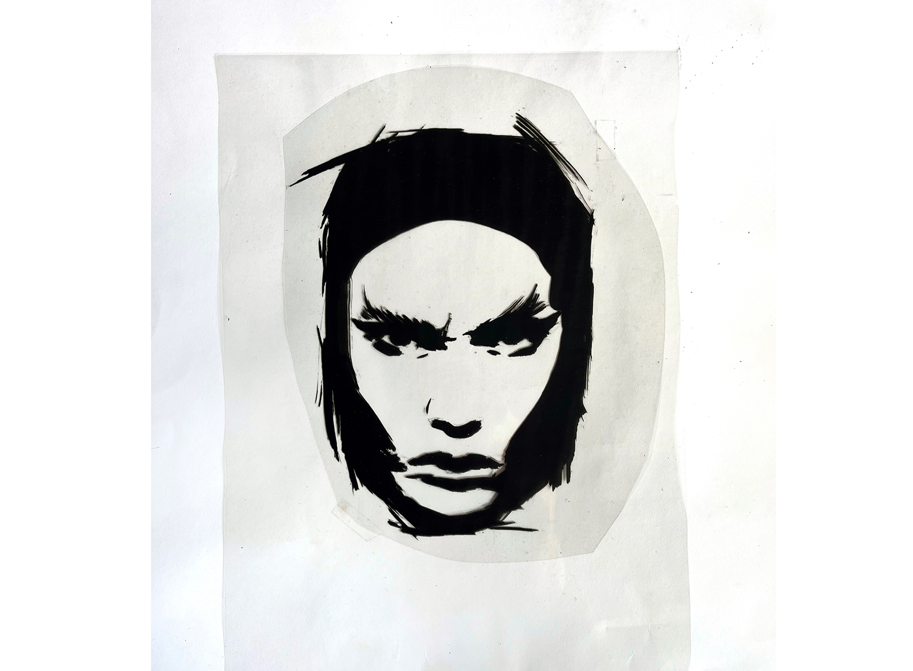

Travail de groupe, j’ai dessiné les typons et fait quelques tirages d’impression.
L’aspect brut des traits, ainsi que le contraste fort cherchent à représenter le caractère
explosif, agressif et peu contrôlé de la colère.
Encre sur papier cartonné 49cm x 64,5m



